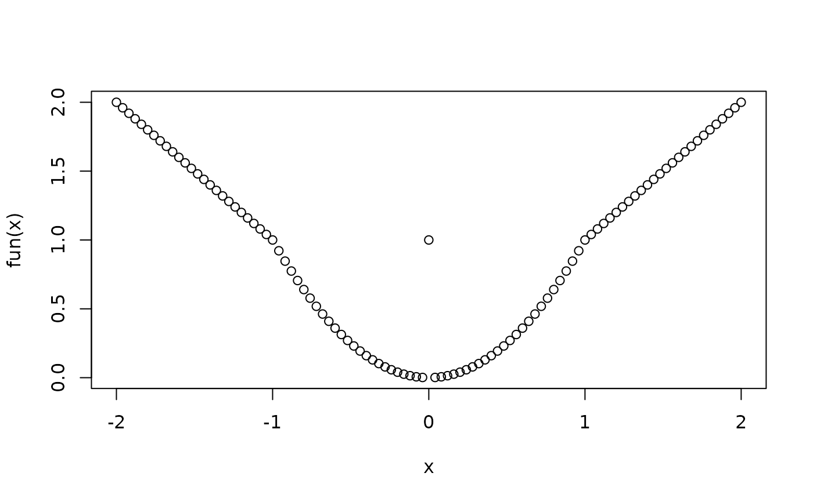

Distinguish between Cases Specified by Logical Conditions
cases.Rdcases allows to distinguish several cases defined logical
conditions. It can be used to code these cases into a vector. The
function can be considered as a multi-condition generalization of
ifelse.
Arguments
- ...
A sequence of logical expressions or assignment expressions containing logical expressions as "right hand side".
- check.xor
character (either
"warn","stop", or"ignore") or logical; ifTRUEor equal to"stop"or"warn",caseschecks whether the case conditions are mutually exclusive. If this is not satisfied andcheck.xorequals"warn"(the default), a warning is shown, otherwise an error exception is raised.- .default
a value to be used for unsatisfied conditions.
- .complete
logical, if
TRUEan additional factor level is created for the unsatisfied conditions.- check.na
character (either
"warn","stop", or"ignore") or logical; ifTRUEor equal to"stop"or"warn",caseschecks, whether any of the case conditions evaluates toNA. If that case, ifcheck.naisTRUEor equals"stop"an error exception is raised, while ifcheck.naequals"warn"(the default) a warning is shown.- na.rm
a logical value; how to handle
NAs (if they do not already lead to an error exception). IfFALSEif any of the conditions evaluates toNA, the corresponding value of the result vector isNA. IfTRUE(the default), the resulting vector or factor isNAonly for instances where all conditions result inNA.
Details
There are two distinct ways to use this function. Either the
function can be used to construct a factor that represents
several logical cases or it can be used to conditionally
evaluate an expression in a manner similar to ifelse.
For the first use, the ... arguments have to be a series of
logical expressions. cases then returns a factor
with as many levels as logical expressions given as
... arguments. The resulting factor will attain its
first level if the first condition is TRUE, otherwise it will attain its
second level if the second condition is TRUE, etc.
The levels will be named after the conditions or, if name tags are
attached to the logical expressions, after the tags of the expressions.
Not that the logical expressions all need to evaluate to logical vectors
of the same length, otherwise an error condition is raised.
If .complete is TRUE then an additional factor level is
created for the conditions not satisfied for any of the cases.
For the second use, the ... arguments have to be a series
of assignment expression of the type <expression> <- <logical expression>
or <logical expression> -> <expression>. For cases
in which the first logical expression is TRUE, the result of first expression that
appears on the other side of the assignment operator become elements of the
vector returned by cases, for cases in which the second logical expression is TRUE,
the result of the second expression that appears on the other side
of the assignment operator become elements of the
vector returned by cases, etc.
For cases that do not satisfy any of the given conditions the value of
the .default argument is used.
Note that the logical expressions also here all need to evaluate to logical
vectors of the same length. The expressions on the other side of the
assignment operator should also be either vectors of the same length
and mode or should scalars of the same mode, otherwise unpredictable
results may occur.
Value
If it is called with logical expressions as ... arguments,
cases returns a factor, if it is called with
assignment expressions the function returns a vector with the
same mode as the results of the "assigned" expressions
and with the same length as the logical conditions.
Examples
# Examples of the first kind of usage of the function
#
df <- data.frame(x = rnorm(n=20), y = rnorm(n=20))
df <- df[do.call(order,df),]
(df <- within(df,{
x1=cases(x>0,x<=0)
y1=cases(y>0,y<=0)
z1=cases(
"Condition 1"=x<0,
"Condition 2"=y<0,# only applies if x >= 0
"Condition 3"=TRUE
)
z2=cases(x<0,(x>=0 & y <0), (x>=0 & y >=0))
}))
#> Warning: conditions are not mutually exclusive
#> x y z2 z1 y1 x1
#> 9 -1.58433500 -0.2502330 x < 0 Condition 1 y <= 0 x <= 0
#> 11 -1.05069663 0.3355279 x < 0 Condition 1 y > 0 x <= 0
#> 18 -0.76549836 0.5578168 x < 0 Condition 1 y > 0 x <= 0
#> 8 -0.74471738 0.0131168 x < 0 Condition 1 y > 0 x <= 0
#> 3 -0.52495130 -0.6324275 x < 0 Condition 1 y <= 0 x <= 0
#> 20 -0.31171236 0.4732320 x < 0 Condition 1 y > 0 x <= 0
#> 13 -0.20643683 1.5218340 x < 0 Condition 1 y > 0 x <= 0
#> 15 -0.16373703 -0.4353638 x < 0 Condition 1 y <= 0 x <= 0
#> 19 -0.09139446 -0.9147120 x < 0 Condition 1 y <= 0 x <= 0
#> 16 -0.06540950 -0.7622394 x < 0 Condition 1 y <= 0 x <= 0
#> 17 -0.01893197 0.7754911 x < 0 Condition 1 y > 0 x <= 0
#> 4 0.01761226 -1.2570881 (x >= 0 & y < 0) Condition 2 y <= 0 x > 0
#> 10 0.03377661 -0.7466229 (x >= 0 & y < 0) Condition 2 y <= 0 x > 0
#> 5 0.11858673 0.2230045 (x >= 0 & y >= 0) Condition 3 y > 0 x > 0
#> 7 0.39943487 -1.7093307 (x >= 0 & y < 0) Condition 2 y <= 0 x > 0
#> 6 0.41783217 0.2974585 (x >= 0 & y >= 0) Condition 3 y > 0 x > 0
#> 14 0.57433219 0.8143471 (x >= 0 & y >= 0) Condition 3 y > 0 x > 0
#> 1 0.74317176 0.9117971 (x >= 0 & y >= 0) Condition 3 y > 0 x > 0
#> 12 0.74787793 1.2041386 (x >= 0 & y >= 0) Condition 3 y > 0 x > 0
#> 2 1.14344957 -0.8925749 (x >= 0 & y < 0) Condition 2 y <= 0 x > 0
xtabs(~x1+y1,data=df)
#> y1
#> x1 y > 0 y <= 0
#> x > 0 5 4
#> x <= 0 6 5
dd <- with(df,
try(cases(x<0,
x>=0,
x>1,
check.xor=TRUE)# let's be fussy
)
)
#> Error in cases(x < 0, x >= 0, x > 1, check.xor = TRUE) :
#> conditions are not mutually exclusive
dd <- with(df,
try(cases(x<0,x>=0,x>1))
)
#> Warning: conditions are not mutually exclusive
genTable(range(x)~dd,data=df)
#> Error: value for ‘dd’ not found
# An example of the second kind of usage of the function:
# A construction of a non-smooth function
#
fun <- function(x)
cases(
x==0 -> 1,
abs(x)> 1 -> abs(x),
abs(x)<=1 -> x^2
)
x <- seq(from=-2,to=2,length=101)
plot(fun(x)~x)
#> Warning: Conditions are not mutually exclusive

# Demo of the new .default and .complete arguments
x <- seq(from=-2,to=2)
cases(a = x < -1,
b = x > 1,
.complete = TRUE)
#> [1] a !(a|b) !(a|b) !(a|b) b
#> Levels: a b !(a|b)
cases(x < -1,
x > 1,
.complete = TRUE)
#> [1] x < -1 !(x < -1 | x > 1) !(x < -1 | x > 1) !(x < -1 | x > 1)
#> [5] x > 1
#> Levels: x < -1 x > 1 !(x < -1 | x > 1)
cases(1 <- x < -1,
3 <- x > 1,
.default = 2)
#> [1] 1 2 2 2 3
threshhold <- 5
d <- c(1:10, NaN)
d1 <- cases(
d > threshhold -> 1,
d <= threshhold -> 2
)
#> Warning: At least one logical condition results in missing values
#> Warning: 1 NAs created
d2 <- cases(
is.na(d) -> 0,
d > threshhold -> 1,
d <= threshhold -> 2
)
#> Warning: At least one logical condition results in missing values
#> Warning: Conditions are not mutually exclusive
# Leads to missing values because some of the conditions result in missing
# even though they could be 'captured'
d3 <- cases(
is.na(d) -> 0,
d > threshhold -> 1,
d <= threshhold -> 2,
na.rm=FALSE
)
#> Warning: At least one logical condition results in missing values
#> Warning: Conditions are not mutually exclusive
#> Warning: 1 NAs created
d4 <- cases(
is.na(d) -> 0,
d > threshhold +2 -> 1,
d <= threshhold -> 2,
na.rm=FALSE
)
#> Warning: At least one logical condition results in missing values
#> Warning: Conditions are not mutually exclusive
#> Warning: 3 NAs created
cbind(d,d1,d2,d3,d4)
#> d d1 d2 d3 d4
#> [1,] 1 2 2 2 2
#> [2,] 2 2 2 2 2
#> [3,] 3 2 2 2 2
#> [4,] 4 2 2 2 2
#> [5,] 5 2 2 2 2
#> [6,] 6 1 1 1 NA
#> [7,] 7 1 1 1 NA
#> [8,] 8 1 1 1 1
#> [9,] 9 1 1 1 1
#> [10,] 10 1 1 1 1
#> [11,] NaN NA 0 NA NA
cases(
d > threshhold,
d <= threshhold
)
#> Warning: At least one logical condition results in missing values
#> Warning: 1 NAs created
#> [1] d <= threshhold d <= threshhold d <= threshhold d <= threshhold
#> [5] d <= threshhold d > threshhold d > threshhold d > threshhold
#> [9] d > threshhold d > threshhold <NA>
#> Levels: d > threshhold d <= threshhold
cases(
is.na(d),
d > threshhold,
d <= threshhold
)
#> Warning: At least one logical condition results in missing values
#> Warning: conditions are not mutually exclusive
#> [1] d <= threshhold d <= threshhold d <= threshhold d <= threshhold
#> [5] d <= threshhold d > threshhold d > threshhold d > threshhold
#> [9] d > threshhold d > threshhold is.na(d)
#> Levels: is.na(d) d > threshhold d <= threshhold
cases(
d > threshhold,
d <= threshhold,
.complete=TRUE
)
#> Warning: At least one logical condition results in missing values
#> Warning: 1 NAs created
#> [1] d <= threshhold d <= threshhold d <= threshhold d <= threshhold
#> [5] d <= threshhold d > threshhold d > threshhold d > threshhold
#> [9] d > threshhold d > threshhold <NA>
#> Levels: d > threshhold d <= threshhold
cases(
d > threshhold + 2,
d <= threshhold,
.complete=TRUE
)
#> Warning: At least one logical condition results in missing values
#> Warning: 1 NAs created
#> [1] d <= threshhold
#> [2] d <= threshhold
#> [3] d <= threshhold
#> [4] d <= threshhold
#> [5] d <= threshhold
#> [6] !(d > threshhold + 2 | d <= threshhold)
#> [7] !(d > threshhold + 2 | d <= threshhold)
#> [8] d > threshhold + 2
#> [9] d > threshhold + 2
#> [10] d > threshhold + 2
#> [11] <NA>
#> 3 Levels: d > threshhold + 2 ... !(d > threshhold + 2 | d <= threshhold)